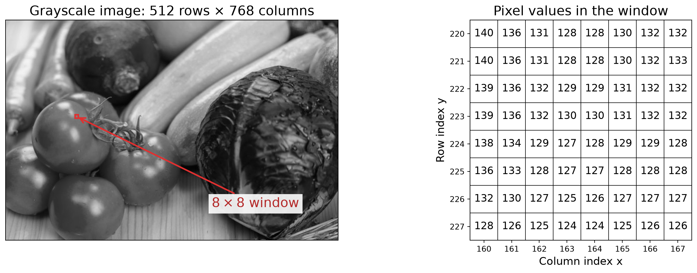
Lecture 09
Computer Science Department, Colorado School of Mines
By the end of this lecture, you should be able to:

gray[y, x]: row first, column second.gray[0, 0].\[ I(y,x)=\begin{bmatrix}R(y,x)&G(y,x)&B(y,x)\end{bmatrix} \]
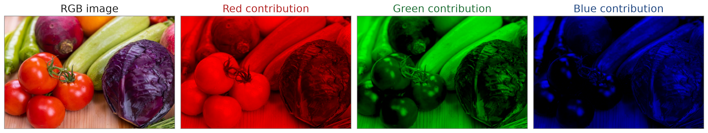
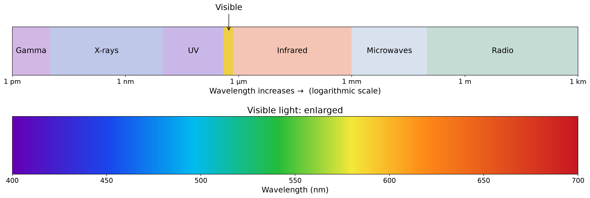
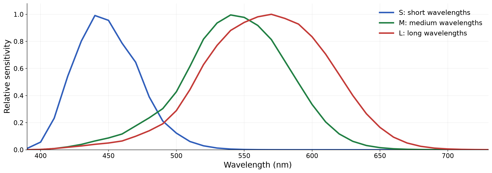
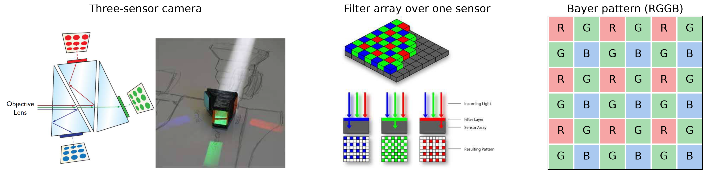
Demosaicing estimates the two missing color components at each sensor location using nearby samples.
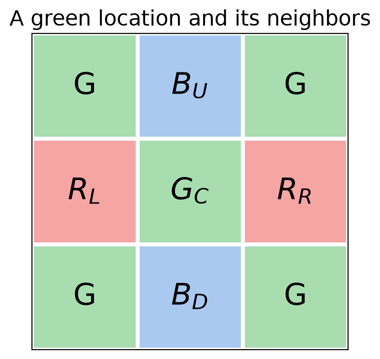
At the center, green is measured directly:
\[ \widehat G_C = G_C \]
Estimate red and blue by averaging nearby samples:
\[ \widehat R_C = \frac{R_L+R_R}{2}, \qquad \widehat B_C = \frac{B_U+B_D}{2} \]
The reconstructed pixel is
\[ \widehat I_C = \begin{bmatrix}\widehat R_C & G_C & \widehat B_C\end{bmatrix}. \]
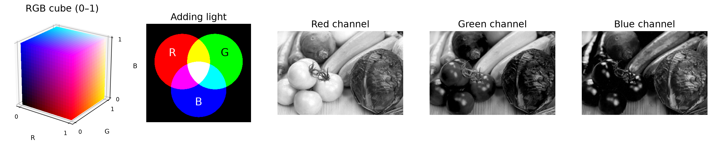
OpenCV loads BGR, so we convert to RGB before splitting. In the channel images, brighter pixels mean larger values (0–255).
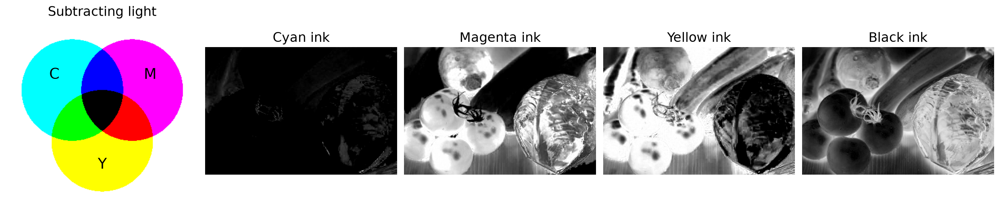
Channel values range from 0 to 1; brighter pixels indicate more ink. OpenCV has no direct CMYK conversion, so this example uses NumPy.
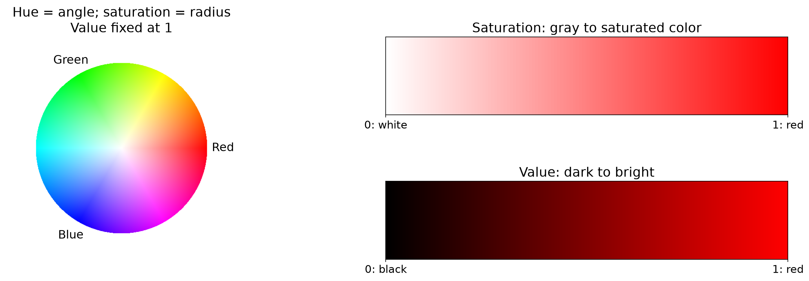
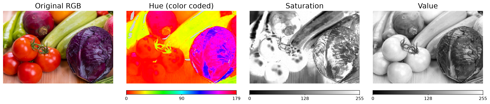
For 8-bit OpenCV images: \(H\in[0,179]\) (approximately half the angle in degrees), and \(S,V\in[0,255]\).
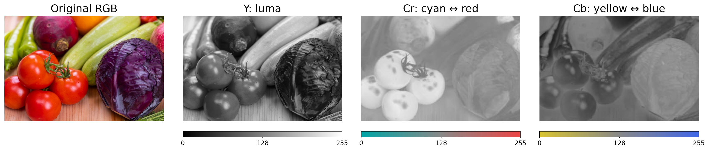
OpenCV returns channels in Y, Cr, Cb order. For 8-bit images, neutral chroma is approximately 128.
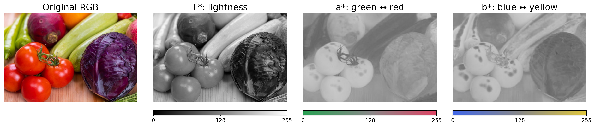
OpenCV’s 8-bit encoding: \(L_8=255L^*/100\), \(a_8=a^*+128\), \(b_8=b^*+128\). Neutral \(a^*=b^*=0\) is stored as 128.
hsv = cv2.cvtColor(frame, cv2.COLOR_BGR2HSV)
mask = cv2.inRange(hsv, (0, 130, 80), (5, 255, 255)) # returns 255 for matching pixels, 0 otherwise
mask |= cv2.inRange(hsv, (170, 130, 80), (179, 255, 255)) # |= combines the masks
mask = cv2.morphologyEx(mask, cv2.MORPH_CLOSE, np.ones((3, 3), np.uint8)) # fills small gaps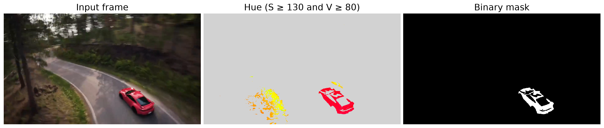
Select the largest red region in each frame, draw its bounding box, and retain its recent center positions.
import cv2
import numpy as np
from collections import deque
def annotate_car(frame, trail):
hsv = cv2.cvtColor(frame, cv2.COLOR_BGR2HSV)
mask = cv2.inRange(hsv, (0, 130, 80), (5, 255, 255))
mask |= cv2.inRange(hsv, (170, 130, 80), (179, 255, 255))
mask = cv2.morphologyEx(mask, cv2.MORPH_CLOSE, np.ones((3, 3), np.uint8))
contours, _ = cv2.findContours(mask, cv2.RETR_EXTERNAL, cv2.CHAIN_APPROX_SIMPLE)
result = frame.copy()
if contours:
car = max(contours, key=cv2.contourArea)
if cv2.contourArea(car) > 10:
x, y, w, h = cv2.boundingRect(car)
trail.append((x + w//2, y + h//2))
cv2.rectangle(result, (x, y), (x+w, y+h), (0, 255, 255), 3)
cv2.circle(result, trail[-1], 4, (0, 255, 255), -1)
if len(trail) > 1:
cv2.polylines(result, [np.array(trail, np.int32)], False, (255, 255, 0), 3)
return result
if __name__ == "__main__":
cap = cv2.VideoCapture("assets/09_color/red_car_clip.mp4")
trail = deque(maxlen=40)
delay = round(1000 / cap.get(cv2.CAP_PROP_FPS))
while True:
ok, frame = cap.read()
if not ok:
break
result = annotate_car(frame, trail)
comparison = cv2.resize(np.hstack([frame, result]), (1280, 360))
cv2.imshow("Input | Color-based tracking", comparison)
if cv2.waitKey(delay) == 27:
break
cap.release()
cv2.destroyAllWindows()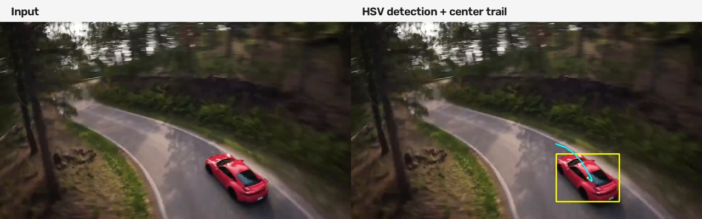
Computer Vision; Colorado School of Mines | Kaveh Fathian